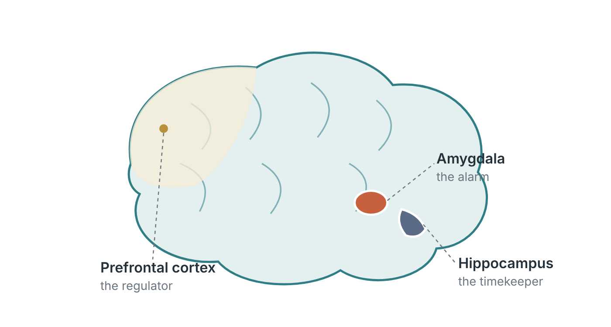
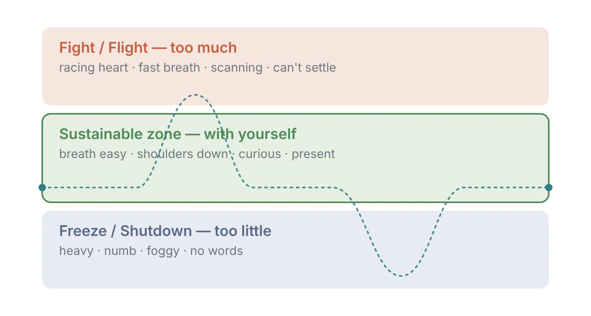

A free guide by Andrea Bacconi
Un guide gratuit d'Andrea Bacconi
Understanding the nervous system
What anxiety and stress do in the brain and body, how to recognise the different states, and what helps the system come back.
Ce guide est pour l'instant disponible en anglais. Une version française arrive bientôt.
Anxiety is an old survival system doing its job a little too well. When we understand how it works, it stops feeling like something happening to us, and becomes something we can read and work with.
1Three parts of the brain at play
When the alarm is loud, these three work together, and the thinking part quietly steps back. That is why reasoning with ourselves in the moment is difficult.
The alarm
Amygdala
A small, almond-shaped part deep in the brain. Its whole job is to keep us safe, scanning constantly for threat and firing before we can think. Under prolonged pressure it can learn to tag ordinary situations (like work) as danger, so the signal alone sets it off, even on a morning when nothing is wrong.
The timekeeper
Hippocampus
It files memories in time, sorting "that was dangerous then" from "this is safe now". Under stress it fragments, and the brain stops telling past from present. This is why anxiety can feel so urgent and present, as if the threat were right here.
The regulator
Prefrontal cortex
The clear, reasoning part: it keeps perspective and tells past from present. When the alarm fires, the body readies to fight or run: blood goes to the muscles, the breath quickens, and stress chemicals (adrenaline and cortisol) flood the system. Those same chemicals quiet the prefrontal cortex, so the reasoning part goes partly offline right when it would be most useful. This is the survival system doing its job, but most of the time there is no real life danger to run from.

The good news: this is reversible. With repeated somatic practice the amygdala calms, the hippocampus reorganises so the past feels like the past, and the regulator comes back online. The brain is plastic, it rewires through safe experience, repeated.
2Four states, and how the body speaks them
A healthy nervous system is always moving between activation and rest. There is a middle zone where a person can stay present with themselves, and, under stress, the system can move up into mobilisation or down into shutdown.
Fight / Flight (hyperarousal, up)
In the body: Heart racing, fast high/shallow breath, heat in the chest and face, jaw tight, shoulders up, gut clenched, hands gripping, restless legs, cold hands, eyes scanning, wired and exhausted at once. The diaphragm closes down.
In the mind: Racing, jumping between things, everything urgent, black-and-white, "I need to get out of here", rehearsing an argument, scanning what's coming, overplanning.
Sustainable zone (window of tolerance)
In the body: Breath low and easy into the belly, jaw soft, shoulders down, warm hands, feet felt, vision wide enough to take in the room.
In the mind: Thoughts at a speed that can be followed, more than one thing can be true, curiosity and creativity available. Able to stay present even when it is uncomfortable.
Freeze (hypoarousal, down)
In the body: Heaviness, numbness, cold hands and feet, fog, shallow held breath, no words, tired even after sleep.
In the mind: Slow or empty, "I can't", "what's the point", the smallest decision feels impossible, losing the thread of the day, lack of motivation.
Being in the window does not mean being calm all the time. It means a person can notice where they are and come back. We move in and out of these states every day, that is normal and healthy. The window can be widened with practice.

3Recognise the state and what helps
Naming the state already brings more choice. Below is the first thing to notice, and concrete actions that invite a shift. Small is enough: the work happens in small doses, and different things land for different people, so it is worth trying a few.
If there is: heart speeding, breath high and fast, heat, can't sit still, mind racing, urge to run or snap
The state is likely Fight / Flight
The system is full of energy with nowhere to go, like pressing the accelerator with the handbrake on. First give the charge an outlet, then settle it:
- Discharge the charge: push firmly against a wall, squeeze and wring a towel, press palms hard together, or push hands down into the thighs. Hold a few seconds, then let go.
- Move it out: stamping the feet, shaking out the arms and hands (possibly also legs and feet), a brisk short walk.
- Then down-regulate: lengthen the exhale so it is longer than the in-breath; the "Vuuu" sound on the out-breath, or candle breathing.
- Ground: press the feet into the floor, feel the chair; let the eyes slowly take in the whole room.
If there is: heavy, numb, foggy, no words, cold, can't get started, want to disappear
The state is likely Freeze / Shutdown
The system has braked too hard. Here we gently invite energy and sensation back. A little activation, never force:
- Wake the body gently: light tapping over the arms, chest and thighs; a slow shake of hands and shoulders; rub the palms together until warm.
- Orient: look around slowly, naming colours and shapes; turn the head to take in the space.
- Warmth and pressure: press the hands together, then a firm self-hug with "I am here"; a hand on the belly or somewhere on the body where it feels nurturing.
- Small movement: stand up, change position, a few slow steps. Momentum matters more than intensity.
If there is: breath easy, shoulders down, feet felt, curious, able to stay with discomfort
The state is likely the sustainable zone
Nothing to fix. The work here is to notice and reinforce safety:
- Name it: "this is what safe feels like." Each time, it teaches the amygdala that safety exists.
- Let it register fully: where in the body is the ease? Bring your attention there, let it grow a little.
- This is the best time to practise, building the capacity to return here under stress.
4Four tools to build safety
Gentle ways to widen the window of tolerance and bring the system back toward the green zone.
Titration
Small, bite-size doses. Not all at once. Stay with something for a short while, then a little longer. Let safety build slowly.
Self-regulation
Breath, sound, touch, movement, awareness. The language the amygdala actually understands, not words.
Resourcing
Ask: what is working right now? What is needed in this moment? Return to a place in the body that feels easier.
Tracking and listening to sensations
Sensation is how the body communicates. Notice it (for example warm, light, heavy, tingling), listen to it, without trying to change it. That is how we read the nervous system state.
5The morning baseline
A short practice, ideally done every day, to give the system a calmer starting point and to learn, from a state of regulation, how to communicate with our bodies. The more regularly you practise it, the easier it will be to access it from a state of stress and activation. You can anchor it to something already habitual, like the first coffee, or the good-night chamomile.
Orienting
Let your eyes move slowly around the room: the colours, the shapes, the objects, even what is behind you. This gently tells your brain, I am here, and I am safe.
Grounding
Feel your feet on the floor and press them down a little. Feel the chair holding you, and let yourself lean into it. Let gravity hold you.
Conscious breath, hands on belly and chest
One hand on your belly, one on your chest. Simply feel your breath without changing it. Then take a few deep breaths with a sigh out.
Candle breath
Breathe in gently through your nose. Breathe out slowly through soft lips, as if blowing out a candle or through a straw. A long exhale is your body's natural calm button.
VU sound
Breathe in, and on the out-breath make a soft "Vuuuu" sound. Feel the vibration with a hand at your throat, your chest, below your ribs, then below your navel. The hum soothes the vagus nerve, your body's calming line.
Self-holding
Wrap your arms around yourself, each hand resting on the opposite arm. Feel the warmth and the weight of your own hands. You can gently sway, or softly stroke your arms. Stay for a few slow breaths, letting yourself feel held. This tells your nervous system: I am here, I am safe, I am not alone.
Want to go deeper?
These practices work best when they become familiar, and it often helps to learn them with someone. If you would like to explore what your own nervous system is telling you, you can book a free intro call with me.
Book a free intro callRéserver un appel découverte gratuit Download as PDFTélécharger en PDF
This guide is for general education and does not replace medical or psychological care. If you are struggling, please reach out to a doctor or a mental health professional.